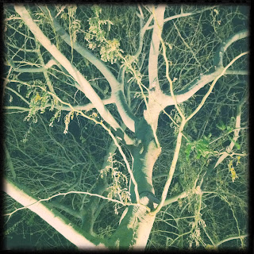
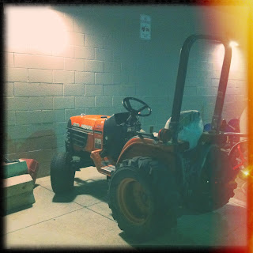

Recovered weblog entry
Exterior lighting


My best efforts at regular postings this month have failed, largely because of sundry illnesses passing through my family. I'm finally feeling zapped; but several things will give me energy in the coming days and weeks. Working late tonight, so this picture was all about finding suitable light for a quick shot. It seems this new film gives random results, as if the film had expired long ago and only a few exposures are worth their salt. The tree turned out well enough. I'll post an example of a failure as well. Lens: Adler 9009
Film: Dylan